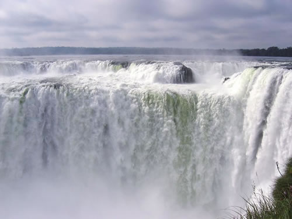

梦 想 Iguacu
我最喜欢的旅游景点
* 那个热带国 是否只有黎耀辉与何宝荣?

伊瓜苏大瀑布——世界最宽的瀑布
- 伊瓜苏大瀑布位于阿根廷和巴西两国边境，南纬25度41分，西经54度26分，在阿根廷与巴西边界上伊瓜苏河与巴拉那河合流点上游23公里处
- 该河的主要部分跌落一个狭窄的半圆形裂隙，称为「魔鬼之喉」，其景象被形容为「大海泻入深渊」。此段(称联合瀑布)的良好展望点在巴西和阿根廷两侧皆有

- 作为世界上最大最壮观的瀑布，伊瓜苏瀑布在长度上延伸至2700米。许多稀有和濒危动植物种在公园中得到保护，包括大水獭和大食蚁兽。瀑布产生的云雾滋润着葱翠植物的生长
- 伊瓜苏大瀑布是北美洲尼加拉瀑布宽度的4倍，比非洲的维多利亚瀑布大一些。“伊瓜苏”在南美洲土著居民瓜拉尼人的语言中，是“大水”的意思。发源于巴西境内的伊瓜苏河在汇入巴拉那河之前，水流渐缓，在阿根廷与巴西边境，河宽4000米，像一个湖泊。水往前流陡然遇到一个峡谷，河水顺着倒U形峡谷的顶部和两边向下直泻，悬崖边有无数树木丛生的岩石岛屿，使伊瓜苏河由此跌落时约分为275股急流或泻瀑形成一个景象壮观的半环形瀑布群，总宽度3000米至4000米，平均落差80米
-More View-
TOP
©2011 黄杨 QQ407786839